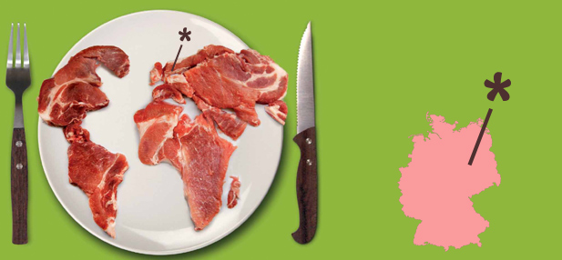
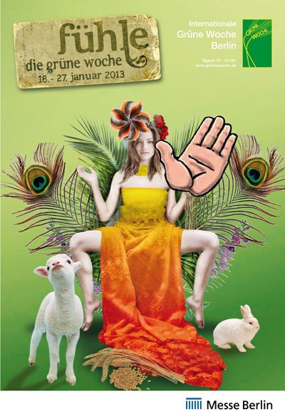
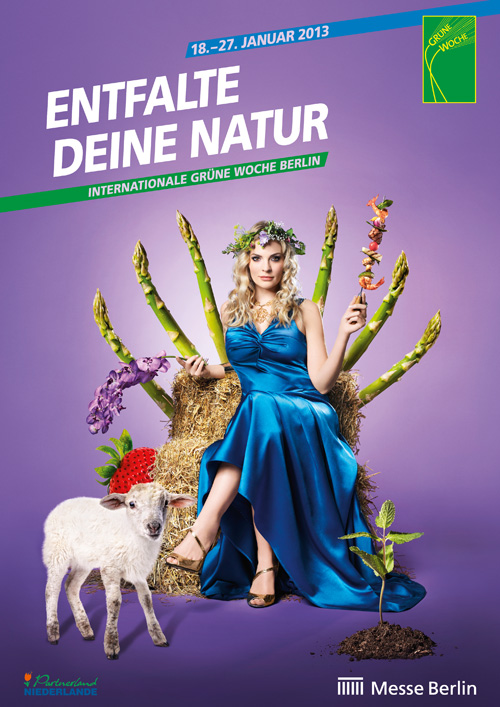

aber nicht in Gelderland in seinem Heimatland?"
Die "Rostocker Präambel" zu MENSCH UND LAND [2.1] benennt eine klare Antwort:
"Mensch und Land sind das Glück von Mecklenburg-Vorpommern."
„Blüh´ im Glanze diese Glückes“ muß sich Herr Straathof gedacht haben.
Als die LMS ihn 2006 zur Gemeindevertretung nach Alt Tellin brachte, hing ein kleines goldenes Glücksschwein an seinem Halskettchen.
Der Masterplan für neue Schweinefabriken in Nordostdeutschland war ohne Bürgerbeteiligung und Diskussion in der Öffentlichkeit längst ausgearbeitet.
Der Telliner Bürgermeister verwies immer wieder auf das geplante europäische Schweinezuchtgebiet, dem sich eine kleine Gemeinde kaum widersetzen könne.
Doch obwohl der staatliche Landwirtschaftsberater vom besten Standort für die Ferkelfabrik im ganzen Land MV sprach,
wuchs sich der Widerstand dagegen derart aus, dass ein "weiter so" nicht mehr zu vertreten war...
Nicht zufällig titelte der NDR kurz vor Weihnachten 2011: "Backhaus will neuen Masterplan für Tiermast".
Work in Progress ist weiter auf dem Vormarsch:
"In diesem Prozess lädt das eigene Internetforum hier zur Bürgerbeteiligung und maßgeblichen Diskussion in der Öffentlichkeit ein. Aus der Mitte der Gesellschaft entsteht so gemeinsam "Mensch und Land", ein Leitbild für Mecklenburg-Vorpommern."
Landesmarketing und Agrarmarketing MV rückten schon 2010 näher zusammen.
Sie präsentieren das Land auf der Grünen Woche, zusammen mit Landkreisen, Verbänden, Vereinen, Hotels und Gaststätten.
Nahrungsmittelhersteller dagegen sind auf dem Rückzug. Die Kehrseite der Energieproduktion sieht gelb aus.
(auf den Flächen der Gemeinde Alt Tellin besteht die Fruchtfolge aus Raps und Getreide (meist Weizen, selten Gerste u. in den letzten Jahren immer mehr Mais an den Talrändern).
Aber in diesem Jahr wird die blaue Wunderblume präsentiert: Sie soll helfen, ca 6,5 Mio Soja-Import zu kompensieren.
Denn das kleine Deutschland hat schon 2011 die großen USA in der Zahl der Schweinefleischexporte übertroffen.
http://www.utopia.de/magazin/wir-sind-billig-fleisch-deutschland-auf-dem-weg-zum-groessten-fleisch-exporteur-der-welt
[Anhang: <!-- ia2 -->130114-fleisch-atlas-z-heinrich-boell-stiftung-t-618x286.jpg<!-- ia2 -->]
Da Eiweißpflanzen in anderen Regionen der Welt günstiger produziert werden können, hat sich der Agrarausschuss MVs vorgenommen, die Wertung des Leguminosen-Anbaus als „Greening“-Maßnahme auf ökologischen Vorrangflächen (7 % der Ackerfläche) aufgrund positiver Auswirkungen auf Ökologie und Bodenfruchtbarkeit zu befördern.
Statt Pufferzonen an Acker- und Gewässerrandstreifen umzusetzen, soll die Gülleproduktion aus eigener Kraft angekurbelt werden.
Welch ein Glück für das geliebte Schweinesystem im schönen Gesundheitsland MV.
Das Deutschlandlied war ursprünglich auch als Trinklied gedacht: anstelle von "Blüh im Glanze dieses Glückes..." gab es die Alternative "Stoßet an und ruft einstimmig: Hoch das deutsche Vaterland!"
In diesem Sinne wünsche ich eine tolle Genußreise: den Mitgliedern des Agrarausschusses, den Herren Vorsitzenden der Arbeitsgruppen der Perspektivkommission, den Mitgliedern der Perspektivkommission und ihren Stellvertreterinnen und Stellvertretern, die sich persönlich in den Sitzungen der Arbeitsgruppen eingebracht haben und den Damen und Herren, die unmittelbar im Plenum mitwirkten und schriftliche Beiträge lieferten,
wenn sie am 24. Januar 2013 im Rahmen der weltgrößten Verbrauchermesse die aktuellen strategischen Aussagen zum Masterplan aus den fünf Arbeitsgruppen in „MENSCH UND LAND 2.1“, in der fachlichen und politischen Zusammenschau diskutieren und für die weitere Vertiefung und Konkretisierung in den Arbeitsgruppen vorbereiten.
[Anhang: <!-- ia1 -->431271_10150703949356772_865116954_n.jpg<!-- ia1 -->]
[Anhang: <!-- ia0 -->Gruene_Woche_Plakat.jpg<!-- ia0 -->]
Die Demo der 25000 unter dem Motto "Wir haben Agrarindustrie satt" wird dann längst Schnee von gestern sein.
So wie die Pressemitteilung Nr. 223/2012: "Rund 15 000 Menschen haben bisher online ihre Meinung zum „Masterplan“ für die Land- und Ernährungswirtschaft in Mecklenburg-Vorpommern geäußert." Ein Dank an diese fehlt dem aktuellen "Work in Progress".
"Darunter seien etwa 300 verwertbare, allerdings nicht repräsentative Stellungnahmen eingegangen" berichtete Dr. Backhaus am 15.11.2012 im Agrarausschuss.
Ja, worum geht es denn, um Repräsentation oder eine Agrarwende?
Auch die Wende 89 ist in jedem Fall nicht vom repräsentativen Teil der DDR ausgegangen.
Dass ein Neues Forum später vom repräsentativen Teil überrannt wurde, kann daran im Nachhinein auch nichts ändern.


